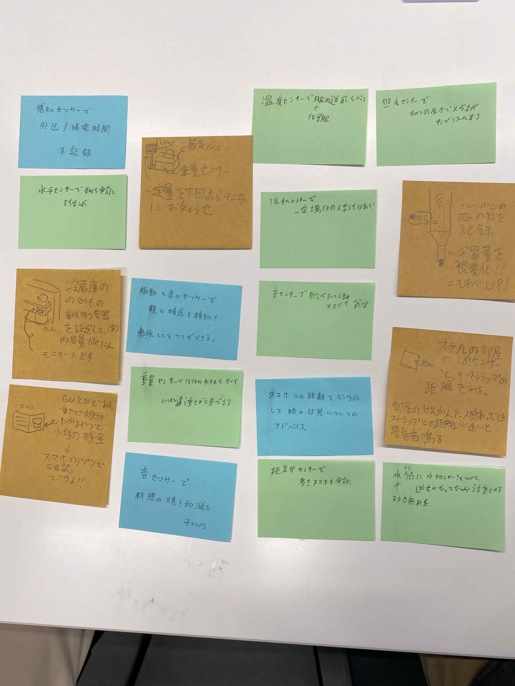

１．何ができそうか

様々な案が出たがなかでも冷蔵庫の飲み物の総量がわかるようにするものが
一番実用的かつデータ保存を有効活用していると感じた。
全体的に、公共の場で活用できるというよりも個人の私生活の中で役立たせる案が多いように感じた
様々な案が出たがなかでも冷蔵庫の飲み物の総量がわかるようにするものが
一番実用的かつデータ保存を有効活用していると感じた。
全体的に、公共の場で活用できるというよりも個人の私生活の中で役立たせる案が多いように感じた